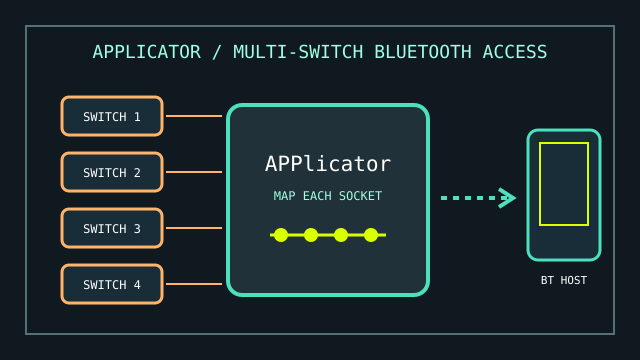

[ EXTERNAL SWITCH ACCESS // BLUETOOTH INTERFACE ]
Pretorian APPlicator
A Bluetooth interface for connecting external switches to supported mobile and computer accessibility functions.

MODEL IDENTIFICATION: Pretorian APPlicator. It is a multi-switch interface without iSwitch’s integral activation surface; record hardware revision and programmed socket functions.
Model specifications
| Catalog leaf | Adaptive and switch-access controls |
|---|---|
| Exact model / identifier | Pretorian APPlicator Bluetooth switch-access interface. |
| Mechanism and primary specifications | Four external switch sockets, independently configurable for a set of supported keyboard, media, and accessibility commands. |
| Host interface and compatibility | Direct Bluetooth pairing with compatible iOS and other Bluetooth host platforms; host features such as Switch Control or Android Switch Access interpret the configured switch actions. No separate receiver is normally required. |
| Revision identification | Log model revision, paired host, firmware, battery/charge state, and per-socket action mapping. |
Compatibility, setup & limitations
- The APPlicator does not include external switches; select switches and mounting that suit the user and check plug/closure requirements for each input.
- Platform-specific features are not identical: command availability and supported scanning, media, or mouse actions vary by OS version and target app. Verify the exact workflow on the intended host.
- Bluetooth pairing can be affected by host pairing limits, sleep behavior, wireless interference, or battery condition. Record the active host and test automatic reconnection.
- The interface only reports configured switch events; it cannot make an app switch-accessible if that app or operating system does not accept the selected event.
Preservation and service
Label switch cords by socket during setup and document the mapping before changing assignments. Protect the jacks from side loading and keep the unit dry.
Use the instruction manual to confirm battery, pairing, and reset procedures for the specific revision before service.
Manufacturer sources
- Pretorian — APPlicator product informationManufacturer overview and switch-access functions.
- Pretorian — APPlicator instruction manual (PDF)Manufacturer setup and command configuration guidance.